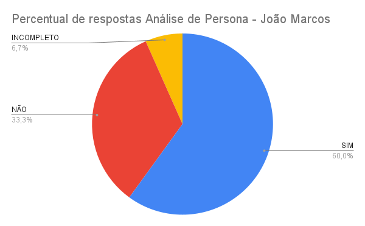

Inspeção do artefato "Personas"
Introdução
Dado o planejamento da atividade, aqui será exibido o procedimento realizado e os eventuais resultados encontrados pela atividade de verificação descrita no planejamento de verificação da etapa referente à etapa 2 para o grupo 5 da disciplina de IHC.
Objetivo
O objetivo desse documento é apresentar a metodologia adotada, os autores, o checklist do artefato "Personas" produzido e seus respectivos resultados, conforme descritos no planejamento.
Metodologia
Para responder as perguntas dos checklists feitos anteriormente no planejamento, o avaliador usará o método de inspeção para responder as perguntas com as opções "SIM", "NÃO" e "INCOMPLETO". Também será gerado um espaço adicional para que possa escrever observações em cada pergunta. Ao completar a verificação da checklist do artefato, será apresentado um gráfico "pizza" com as respostas para uma melhor visualização assim como os problemas encontrados e sugestões de correções, quando cabível.
Objetos de verificação
A Tabela 1 foi produzida para uma melhor visualização do objeto que será aqui verificado e suas respectivas características. Ela é composta pelo artefato que foi verificado, a versão verificada, data de produção, autores e revisores do artefato conforme presentes no próprio artefato em relação à versão que será aqui avaliada, no dia em que se é realizado cada uma das verificações. Visto que todos os integrantes possuem contribuições que devem ser analisadas individualmente, será adotado uma sequência alfabética para a responsabilidade de verificação, isto é, o primeiro integrante na ordem alfabética, Augusto Duarte, será o responsável pela verificação do próximo nome da ordem, Cainã Freitas, este qual será responsável pela verificação do integrante a seguir, Joyce Dionízio, seguida por Lucas Meireles, então Pedro Lucas e, por fim, finaliza-se a lista retornando à Augusto Duarte.
Tabela 1 - Artefato que será verificado
| Artefato | Versão | Data produzido | Produzido por | Revisado por |
|---|---|---|---|---|
| Personas | 2.0 |
06/06/2024 | Pedro Lucas | Augusto Duarte |
Fonte: MEIRELES, Lucas O.. 2024.
Participantes
Os integrantes responsáveis pela verificação da checklist estão devidamente descritos na tabela 02 abaixo, tal como o artefato que será verificado, o autor da lista de verificação que será utilizada conforme previsto no planejamento da verificação e a data em que se foi realizada a verificação:
Tabela 02 - Responsáveis pela verificação e autores da checklist
| Artefato | Responsável pela checklist | Responsável pela verificação | Data da verificação |
|---|---|---|---|
| Personas | Joyce Dionizio | Augusto Duarte, Cainã Freitas, Joyce Dionizio, Lucas Meireles e Pedro Lucas | 26/06/2024 |
Fonte: MEIRELES, Lucas O.. 2024.
Resultados obtidos
Abaixo se encontram os resultados da inspeção do artefato tratado pela tabela 2 com a utilização da checklist proposta, seus comentários, o vídeo de inspeção, um gráfico "pizza" que apresentará o percentual de respostas da checklist, uma listagem de problemas encontrados e suas explicações e/ou observações e, por fim, sugestões de correção. A cada tópico será apresentado uma análise distinta de cada membro conforme planejado.
Persona João Marcos - Augusto Duarte
Aqui serão dispostos os resultados da verificação do artefato "Personas", com direcionamento à persona "João Marcos", proposta pelo membro Joyce Dionizio , feitos pelo integrante Pedro Lucas conforme o planejamento da verificação.
Inspeção
Abaixo se encontra o Vídeo 1, referente à inspeção realizada ao artefato "Personas", com direcionamento à persona "João Marcos".
Vídeo 1 - Gravação da inspeção da "Persona" - João Marcos.
Acesso disponível em: https://www.youtube.com/watch?v=AGGqiBX8Qm8
Checklists
A tabela 3 abaixo apresenta a checklist proposta pela integrante Joyce Dionizio durante o planejamento da verificação com suas verificações e observações feitas pela inspeção do integrante Pedro Lucas.
Tabela 3 - Cheklist Persona 1
| ID | Descrição | Avaliação | Observações | Fonte |
|---|---|---|---|---|
| 44 | A persona tem um nome e sobrenome representativo do perfil do usuário? | SIM | - | Página 168 |
| 45 | São fornecidas a idade e outras informações demográficas da persona? | SIM | - | Página 168 |
| 46 | A persona inclui uma foto para tornar sua representação mais realista? | SIM | - | Página 168 |
| 47 | A persona é definida como primária, secundária, outro stakeholder ou antiusuário? | SIM | Na figura da persona trocar persona por anti persona | Página 168 |
| 48 | Está claro qual é o papel da persona no sistema? | SIM | - | Página 168 |
| 49 | Os objetivos da persona são claramente definidos? | SIM | - | Página 168 |
| 50 | Os objetivos incluem metas além do produto específico, abrangendo aspectos pessoais e profissionais? | NÃO | Os objetivos mostrados tem relação apenas com o site | Página 168 |
| 51 | As habilidades da persona, incluindo educação, treinamento e competências específicas, são descritas? | INCOMPLETO | Falta detalhamento | Página 168 |
| 52 | Essas habilidades são relevantes para a interação com o produto? | SIM | - | Página 168 |
| 53 | As tarefas básicas ou críticas que a persona realiza são claramente descritas? | SIM | - | Página 168 |
| 54 | A frequência, importância e duração dessas tarefas são especificadas? | NÃO | Pode-se adicionar tarefas sem relação ao site | Página 168 |
| 55 | Os relacionamentos da persona com outros stakeholders são identificados? | NÃO | - | Página 168 |
| 56 | As necessidades da persona são detalhadas e incluem citações que ajudam a entender essas necessidades? | NÃO | Mesmo sendo anti persona pode-se detalhar as necessidades fora do site | Página 168 |
| 57 | As expectativas da persona sobre como o produto deve funcionar estão claramente definidas? | SIM | Não condiz com a pergunta por ser anti persona | Página 168 |
| 58 | A organização das informações no domínio ou trabalho da persona é descrita? | NÃO | - | Página 168 |
{kind=link}
Fonte: DIONIZIO, Joyce. 2024
Segue abaixo, pela Figura 1, o gráfico referente às respostas da checklist prevista pela tabela 3.
Figura 1 - Gráfico "pizza" - Personas - NOME PERSONA

Fonte: DOURADO, Pedro Lucas. 2024
Problemas encontrados
Abaixo se encontra a lista de problemas encontrados na persona avaliada, utilizando também como referência o ID das perguntas conforme dispostos na tabela 3 para melhor localização.
ID 50 - Os objetivos incluem metas além do produto específico, abrangendo aspectos pessoais e profissionais? - Não apresentado, objetivos mostrados tem relação apenas com o site
ID 51 - As habilidades da persona, incluindo educação, treinamento e competências específicas, são descritas? - Falta um detalhamento apronfudado.
ID 54 - A frequência, importância e duração dessas tarefas são especificadas?
- Não apresentado.
ID 55 - Os relacionamentos da persona com outros stakeholders são identificados?
- Não apresentado.
ID 56 - As necessidades da persona são detalhadas e incluem citações que ajudam a entender essas necessidades?
- Não apresentado.
ID 58 - A organização das informações no domínio ou trabalho da persona é descrita?
- Não apresentado.
Sugestões de correção
Para a correção da persona avaliada, sugerem-se os itens a seguir:
- Incluir necessidades.
- Incluir relacionamentos com outros stakeholders.
- Incluir frequência, importância e duração das tarefas.
- Incluir objetivos além de funções relacionadas ao site.
- Incluir habilidades da persona.
- Incluir organização das informações do trabalho da persona.
Persona Eduardo Silva - Responsável Cainã Freitas
Aqui serão dispostos os resultados da verificação do artefato "Personas", com direcionamento à persona "Eduardo Silva", proposta pelo membro Cainã Freitas, feitos pelo integrante Augusto Duarte conforme o planejamento da verificação.
Inspeção
Abaixo se encontra o Vídeo 3, referente à inspeção realizada ao artefato "Personas", com direcionamento à persona "Eduardo Silva".
Vídeo 3 - Gravação da inspeção da "Persona" - Eduardo Silva.
Acesso disponível em: https://www.youtube.com/watch?v=q5nC4qWaFk8
Checklists
A tabela 5 abaixo apresenta a checklist proposta pela integrante Joyce Dionizio durante o planejamento da verificação com suas verificações e observações feitas pela inspeção do integrante Augusto Duarte.
| ID | Descrição | Avaliação | Observações | Fonte |
|---|---|---|---|---|
| 44 | A persona tem um nome e sobrenome representativo do perfil do usuário? | SIM | - | Página 168 |
| 45 | São fornecidas a idade e outras informações demográficas da persona? | SIM | - | Página 168 |
| 46 | A persona inclui uma foto para tornar sua representação mais realista? | SIM | - | Página 168 |
| 47 | A persona é definida como primária, secundária, outro stakeholder ou antiusuário? | SIM | - | Página 168 |
| 48 | Está claro qual é o papel da persona no sistema? | SIM | - | Página 168 |
| 49 | Os objetivos da persona são claramente definidos? | SIM | - | Página 168 |
| 50 | Os objetivos incluem metas além do produto específico, abrangendo aspectos pessoais e profissionais? | SIM | - | Página 168 |
| 51 | As habilidades da persona, incluindo educação, treinamento e competências específicas, são descritas? | SIM | - | Página 168 |
| 52 | Essas habilidades são relevantes para a interação com o produto? | SIM | - | Página 168 |
| 53 | As tarefas básicas ou críticas que a persona realiza são claramente descritas? | SIM | - | Página 168 |
| 54 | A frequência, importância e duração dessas tarefas são especificadas? | INCOMPLETO | As tarefas não tem a duração especificada. | Página 168 |
| 55 | Os relacionamentos da persona com outros stakeholders são identificados? | SIM | - | Página 168 |
| 56 | As necessidades da persona são detalhadas e incluem citações que ajudam a entender essas necessidades? | SIM | - | Página 168 |
| 57 | As expectativas da persona sobre como o produto deve funcionar estão claramente definidas? | SIM | - | Página 168 |
| 58 | A organização das informações no domínio ou trabalho da persona é descrita? | SIM | - | Página 168 |
Fonte: DIONIZIO, Joyce. 2024
Acompanhamento
A figura 03 abaixo apresenta o gráfico "pizza" referente às respostas da verificação da tabela 5.
Figura 03 - Gráfico dos resultados da Persona "Eduardo Silva"
Fonte: DUARTE, Augusto. 2024.
Problemas encontrados
Abaixo se encontra a lista de problemas encontrados na persona avaliada, utilizando também como referência o ID das perguntas conforme dispostos na tabela 3 para melhor localização.
ID 54 - A frequência, importância e duração dessas tarefas são especificadas?
- As tarefas não têm a duração especificada, o que impede a compreensão completa da carga de trabalho e da relevância das tarefas para a persona.
Sugestões de correção
Para a correção da persona avaliada, sugerem-se os itens a seguir:
- Adicionar a duração das tarefas realizadas pela persona. Isso ajudará a entender melhor a carga de trabalho e a importância de cada tarefa no contexto da interação com o produto. Detalhar a frequência e a importância das tarefas realizadas para proporcionar uma visão mais completa das atividades da persona.
Persona Maria Oliveira - Joyce Dionizio
Aqui serão dispostos os resultados da verificação do artefato "Personas", com direcionamento à persona "Maria Oliveira", proposta pelo membro Joyce Dionizio, feitos pelo integrante Cainã Freitas conforme o planejamento da verificação.
Inspeção
Abaixo se encontra o Vídeo 1, referente à inspeção realizada ao artefato "Personas", com direcionamento à persona "Maria Oliveira".
Vídeo 1 - Gravação da inspeção da "Persona" - Maria Oliveira.
Acesso disponível em: https://www.youtube.com/watch?v=q5nC4qWaFk8
Checklists
A tabela 3 abaixo apresenta a checklist proposta pela integrante Joyce Dionizio durante o planejamento da verificação com suas verificações e observações feitas pela inspeção do integrante Cainã Freitas.
| ID | Descrição | Avaliação | Observações | Fonte |
|---|---|---|---|---|
| 44 | A persona tem um nome e sobrenome representativo do perfil do usuário? | SIM | - | Página 168 |
| 45 | São fornecidas a idade e outras informações demográficas da persona? | SIM | - | Página 168 |
| 46 | A persona inclui uma foto para tornar sua representação mais realista? | SIM | - | Página 168 |
| 47 | A persona é definida como primária, secundária, outro stakeholder ou antiusuário? | SIM | - | Página 168 |
| 48 | Está claro qual é o papel da persona no sistema? | SIM | - | Página 168 |
| 49 | Os objetivos da persona são claramente definidos? | SIM | - | Página 168 |
| 50 | Os objetivos incluem metas além do produto específico, abrangendo aspectos pessoais e profissionais? | SIM | - | Página 168 |
| 51 | As habilidades da persona, incluindo educação, treinamento e competências específicas, são descritas? | SIM | - | Página 168 |
| 52 | Essas habilidades são relevantes para a interação com o produto? | NÃO | - | Página 168 |
| 53 | As tarefas básicas ou críticas que a persona realiza são claramente descritas? | SIM | - | Página 168 |
| 54 | A frequência, importância e duração dessas tarefas são especificadas? | INCOMPLETO | As tarefas não tem a duração especificada. | Página 168 |
| 55 | Os relacionamentos da persona com outros stakeholders são identificados? | SIM | - | Página 168 |
| 56 | As necessidades da persona são detalhadas e incluem citações que ajudam a entender essas necessidades? | SIM | - | Página 168 |
| 57 | As expectativas da persona sobre como o produto deve funcionar estão claramente definidas? | SIM | - | Página 168 |
| 58 | A organização das informações no domínio ou trabalho da persona é descrita? | SIM | - | Página 168 |
Fonte: DIONIZIO, Joyce. 2024
Acompanhamento
A figura 01 abaixo apresenta o gráfico "pizza" referente às respostas da verificação da tabela 3.
Figura 01 - Gráfico dos resultados de Persona

Fonte: FREITAS, Cainã. 2024.
Problemas encontrados
Abaixo se encontra a lista de problemas encontrados na persona avaliada, utilizando também como referência o ID das perguntas conforme dispostos na tabela 3 para melhor localização.
- ID 52 - Essas habilidades são relevantes para a interação com o produto?
As habilidades (habilidades domésticas e de organização) não correspondem às habilidades necessárias para a interação com o produto (conhecimento basico de informática e habilidades de navegação na internet).
- ID 54 - A frequência, importância e duração dessas tarefas são especificadas?
As tarefas não têm a duração especificada, o que impede a compreensão completa da carga de trabalho e da relevância das tarefas para a persona.
Sugestões de correção
Para a correção da persona avaliada, sugerem-se os itens a seguir:
- Adicionar a duração das tarefas realizadas pela persona. Isso ajudará a entender melhor a carga de trabalho e a importância de cada tarefa no contexto da interação com o produto. Detalhar a frequência e a importância das tarefas realizadas para proporcionar uma visão mais completa das atividades da persona.
- Alterar as habilidades da persona para refletir as habilidades necessárias para a interação com o produto. Isso ajudará a garantir que a persona seja representativa do público-alvo do produto.
Persona Diego Lima - Lucas Meireles
Aqui serão dispostos os resultados da verificação do artefato "Personas", com direcionamento à persona "Diego Lima", proposta pelo membro Lucas Meireles, feitos pelo integrante Joyce Dionizio conforme o planejamento da verificação.
Inspeção
Abaixo se encontra o Vídeo 1, referente à inspeção realizada ao artefato "Personas", com direcionamento à persona "NOME PERSONA".
Vídeo 1 - Gravação da inspeção da "Persona" - Diego Lima.
Acesso disponível em: https://www.youtube.com/watch?v=q5nC4qWaFk8
Checklists
A tabela 3 abaixo apresenta a checklist proposta pela integrante Joyce Dionizio durante o planejamento da verificação com suas verificações e observações feitas pela inspeção do integrante Joyce Dionizio.
| ID | Descrição | Avaliação | Observações | Fonte |
|---|---|---|---|---|
| 44 | A persona tem um nome e sobrenome representativo do perfil do usuário? | SIM | - | Página 168 |
| 45 | São fornecidas a idade e outras informações demográficas da persona? | SIM | - | Página 168 |
| 46 | A persona inclui uma foto para tornar sua representação mais realista? | SIM | - | Página 168 |
| 47 | A persona é definida como primária, secundária, outro stakeholder ou antiusuário? | SIM | - | Página 168 |
| 48 | Está claro qual é o papel da persona no sistema? | SIM | - | Página 168 |
| 49 | Os objetivos da persona são claramente definidos? | SIM | - | Página 168 |
| 50 | Os objetivos incluem metas além do produto específico, abrangendo aspectos pessoais e profissionais? | SIM | - | Página 168 |
| 51 | As habilidades da persona, incluindo educação, treinamento e competências específicas, são descritas? | SIM | - | Página 168 |
| 52 | Essas habilidades são relevantes para a interação com o produto? | SIM | - | Página 168 |
| 53 | As tarefas básicas ou críticas que a persona realiza são claramente descritas? | SIM | - | Página 168 |
| 54 | A frequência, importância e duração dessas tarefas são especificadas? | INCOMPLETO | As tarefas não tem a duração especificada. | Página 168 |
| 55 | Os relacionamentos da persona com outros stakeholders são identificados? | SIM | - | Página 168 |
| 56 | As necessidades da persona são detalhadas e incluem citações que ajudam a entender essas necessidades? | SIM | - | Página 168 |
| 57 | As expectativas da persona sobre como o produto deve funcionar estão claramente definidas? | SIM | - | Página 168 |
| 58 | A organização das informações no domínio ou trabalho da persona é descrita? | SIM | - | Página 168 |
Fonte: DIONIZIO, Joyce. 2024
Acompanhamento
A figura 01 abaixo apresenta o gráfico "pizza" referente às respostas da verificação da tabela 3.
Figura 01 - Gráfico dos resultados de Persona
Fonte: DIONIZIO, Joyce Dionizio. 2024.
Problemas encontrados
Abaixo se encontra a lista de problemas encontrados na persona avaliada, utilizando também como referência o ID das perguntas conforme dispostos na tabela 3 para melhor localização.
- ID 54 - A frequência, importância e duração dessas tarefas são especificadas?
As tarefas não têm a duração especificada, o que impede a compreensão completa da carga de trabalho e da relevância das tarefas para a persona.
Sugestões de correção
Para a correção da persona avaliada, sugerem-se os itens a seguir:
- Adicionar a duração das tarefas realizadas pela persona. Isso ajudará a entender melhor a carga de trabalho e a importância de cada tarefa no contexto da interação com o produto. Detalhar a frequência e a importância das tarefas realizadas para proporcionar uma visão mais completa das atividades da persona.
Persona Maria Arlete - Pedro Lucas Dourado
Aqui serão dispostos os resultados da verificação do artefato "Personas", com direcionamento à persona "Maria Arlete", proposta pelo membro Pedro Lucas, feitos pelo integrante Lucas Meireles conforme o planejamento da verificação.
Inspeção
Abaixo se encontra o Vídeo 5, referente à inspeção realizada ao artefato "Personas", com direcionamento à persona "Maria Arlete".
Vídeo 5 - Gravação da inspeção da "Persona" - Maria Arlete.
Acesso disponível em: https://www.youtube.com/watch?v=Mw3E4-ecpAU
Checklists
A tabela 7 abaixo apresenta a checklist proposta pela integrante Joyce Dionizio durante o planejamento da verificação com suas verificações e observações feitas pela inspeção do integrante NOME.
Tabela 7 - Cheklist Persona
| ID | Descrição | Avaliação | Observações | Fonte |
|---|---|---|---|---|
| 44 | A persona tem um nome e sobrenome representativo do perfil do usuário? | Sim | - | Página 168 |
| 45 | São fornecidas a idade e outras informações demográficas da persona? | Incompleto | - | Página 168 |
| 46 | A persona inclui uma foto para tornar sua representação mais realista? | Sim | - | Página 168 |
| 47 | A persona é definida como primária, secundária, outro stakeholder ou antiusuário? | Sim | - | Página 168 |
| 48 | Está claro qual é o papel da persona no sistema? | Não | - | Página 168 |
| 49 | Os objetivos da persona são claramente definidos? | Sim | - | Página 168 |
| 50 | Os objetivos incluem metas além do produto específico, abrangendo aspectos pessoais e profissionais? | Incompleto | - | Página 168 |
| 51 | As habilidades da persona, incluindo educação, treinamento e competências específicas, são descritas? | Sim | - | Página 168 |
| 52 | Essas habilidades são relevantes para a interação com o produto? | Sim | - | Página 168 |
| 53 | As tarefas básicas ou críticas que a persona realiza são claramente descritas? | Sim | - | Página 168 |
| 54 | A frequência, importância e duração dessas tarefas são especificadas? | Sim | - | Página 168 |
| 55 | Os relacionamentos da persona com outros stakeholders são identificados? | Não | - | Página 168 |
| 56 | As necessidades da persona são detalhadas e incluem citações que ajudam a entender essas necessidades? | Incompleto | - | Página 168 |
| 57 | As expectativas da persona sobre como o produto deve funcionar estão claramente definidas? | Sim | - | Página 168 |
| 58 | A organização das informações no domínio ou trabalho da persona é descrita? | Não | - | Página 168 |
Fonte: DIONIZIO, Joyce. 2024
Segue abaixo, pela Figura 5, o gráfico referente às respostas da checklist prevista pela tabela 3.
Figura 5 - Gráfico "pizza" - Personas - Maria Arlete

Fonte: MEIRELES, Lucas O.. 2024
Problemas encontrados
Abaixo se encontra a lista de problemas encontrados na persona avaliada, utilizando também como referência o ID das perguntas conforme dispostos na tabela 3 para melhor localização.
- ID 45 - São fornecidas a idade e outras informações demográficas da persona?
Não há confirmação de quais são os dados necessários na checklist.
- ID 48 - Está claro qual é o papel da persona no sistema?
Não há menção de como a pessoa usa ou como o sistema trata a persona (cidadão comum, funcionário, etc).
- ID 50 - Os objetivos incluem metas além do produto específico, abrangendo aspectos pessoais e profissionais?
Não há presença de objetivos relacionados ao produto do site.
- ID 55 - Os relacionamentos da persona com outros stakeholders são identificados?
Há relacionamentos com outras pessoas mas não existe uma interação com stakeholders em si.
- ID 56 - As necessidades da persona são detalhadas e incluem citações que ajudam a entender essas necessidades?
As necessidades estão implícitas porém não existem citações para melhor entendimento.
- ID 58 - A organização das informações no domínio ou trabalho da persona é descrita?
Os aspectos não estão presentes na descrição da persona.
Sugestões de correção
Para a correção da persona avaliada, sugerem-se os itens a seguir:
- Revisar quais são os dados demográficos necessários;
- Revisar as tarefas e objetivos para que estejam de acordo tanto com uma pessoa geral mas também com os stakeholders.
- Garantir que haja uma identificação da relação da persona com o sistema.
Bibliografia
Barbosa, S. D. J.; Silva, B. S. da; Silveira, M. S.; Gasparini, I.; Darin, T.; Barbosa, G. D. J. (2021) Interação Humano-Computador e Experiência do usuário. Autopublicação.
Histórico de Versões
| Versão | Data | Descrição | Autor(es) | Data de revisão | Revisor(es) |
|---|---|---|---|---|---|
1.0 |
26/06/2024 | Criação do Documento e adição da inspeção | Lucas Meireles | 26/06/2023 | |
1.1 |
26/06/2024 | Adiciona inspecão persona | Joyce Dionizio | 26/06/2023 | |
1.2 |
26/06/2024 | Adiciona persona 1 Joao Marques | Pedro Lucas | ||
1.3 |
26/06/2024 | Adiciona persona Eduardo Silva | Augusto Duarte | ||
1.4 |
07/07/2024 | Ajusta posições e corrige inspeção do membro Cainã | Lucas Meireles |